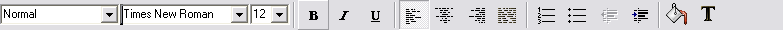

Glossary
Glossary
- Dialog Box
- A dialog box is a window that 'pops up' to gather additional information or to allow you to change settings. You will usually need to press the OK button to continue, but variations include NEXT or FINISH also.
- Drop-down Menu
- A menu of commands or options that appears when you select an item with a mouse. The item you select is generally at the top of the display screen, and the menu appears just below it, as if you had pulled it down.
- Extra Toolbar

- Toolbar not displayed by default. You can choose to display it from the View menu.
- File Extension
- Three letters at the end of a filename that indicate the type of information stored in the file. For example, the file myfile.doc has a file extension of doc meaning it is a Microsoft Word Document.
- Formatting Toolbar

- Toolbar normally displayed directly under the Standard toolbar that contains
- Menu Bar

- A horizontal list of commands or options from which you can choose that appears on top of a window.
- Navigation Bar
- A vertical list of commands or options from which you can choose that appear on the left of a window.
- Page Orientation
- This term describes the way text appears on a page. There are two ways a page can be oriented:
- Portrait: This is the way you would normally see a letter. It actually refers to the way an 8x10 photograph is positioned. For portraits of people, the photographer would want the longer edge of the frame vertical to include the shoulders and head.
- Landscape: This is the way you would see a brochure. You can also think of it as being related to the horizon, which is how most landscape photographs are oriented. Since the horizon is infinitely long, the longest edge of the photograph was horizontal to include as much of the horizon as possible.
- Sans Serif Font
- A sans serif font is a font that has no serifs. Examples are Arial, Century Gothic, and Helvetica.
- Serif Font
- A serif is a feature of the letters in a given typeset. They appear at the end of lines within the letters. An example would be the letter T in Times New Roman - at the end of each horizontal line is a tick that hangs down (that is the serif). Serif fonts include Times New Roman, Bookman Oldstyle, and Courier.
- Standard Toolbar

- Toolbar normally displayed directly under the Menu bar, that contains the most commonly used items in AbiWord, e.g., Create a new document, Open an existing document, Save the document, Print the document, Copy, Paste, etc.